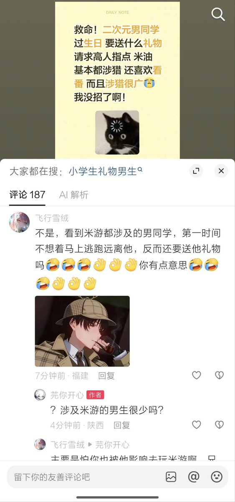

关于米游，想起環状線以前有一个自 2020 年以来关系一直不错的初中女同学，2024 年 9 月 2 日突然切割了環状線，与環状線断绝了所有的联系。理由是什么呢？
理由是環状線玩崩铁，而她「雷」包括崩铁在内的所有米游，所以要切割環状線。
一年后，環状線试着重新加了她的 QQ。她扔下一句「*中国粗口*你 和你的崩铁过吧」便向環状線发送了野爹证。从此，環状線平等地反感每一名混圈的「同人女」。
于環状線看来，同人女圈子里所谓的「雷」（用通俗的话讲就是「反感」）清单，其实早就异化成了给自己贴金的社交标签。而为了维持这一社交标签，这些同人女可以什么都不要，包括道德和礼仪。既然如此，環状線还是敬而远之吧。環状線也玩米游，所以，请远离環状線。
理由是環状線玩崩铁，而她「雷」包括崩铁在内的所有米游，所以要切割環状線。
一年后，環状線试着重新加了她的 QQ。她扔下一句「*中国粗口*你 和你的崩铁过吧」便向環状線发送了野爹证。从此，環状線平等地反感每一名混圈的「同人女」。
于環状線看来，同人女圈子里所谓的「雷」（用通俗的话讲就是「反感」）清单，其实早就异化成了给自己贴金的社交标签。而为了维持这一社交标签，这些同人女可以什么都不要，包括道德和礼仪。既然如此，環状線还是敬而远之吧。環状線也玩米游，所以，请远离環状線。
